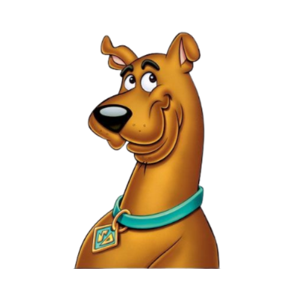

Scooby-Doo
Scooby-Doo é um dogue alemão medroso, divertido e muito leal.
No desenho, ele vive se
metendo em
confusões ao lado de Salsicha, sempre motivado por comida e medo de fantasmas.
Apesar da
covardia,
ele acaba ajudando a resolver mistérios graças ao seu faro apurado e aos momentos inesperados de
coragem.
Seu jeito atrapalhado, fala característica e humor fazem dele o coração da equipe
Mystery
Inc.
Curiosidades
1. A série nasceu em resposta a críticas sobre violência em desenhos animados
No final dos anos 1960, muitos grupos de pais e educadores reclamavam que os desenhos estavam
violentos demais.
Para criar algo mais leve, a equipe responsável apostou em um formato com
mistério, humor e sustos moderados, substituindo lutas e cenas agressivas por investigações e
revelações cômicas.
Isso acabou moldando um novo estilo de animação infantil focado em
aventura
e
resolução de problemas.
2. O personagem canino ajudou a popularizar mascotes falantes em animações
Embora não tenha sido o primeiro animal antropomorfizado em desenhos, o personagem ajudou a
reforçar a ideia de mascotes carismáticos,
com personalidade forte e humor marcante, que
fazem
dupla com um humano.
Depois disso, várias outras produções passaram a incluir mascotes
amigáveis
para fortalecer a identificação emocional do público.
3. A franquia evoluiu acompanhando gerações e mudanças culturais Ao longo de décadas, a série foi se atualizando para refletir transformações na tecnologia, no comportamento dos jovens e no modo de contar histórias. br Isso fez com que a obra mantivesse relevância cultural, sendo reinterpretada em múltiplas versões, estilos de arte, mídias digitais e formatos diferentes — de animações tradicionais a projetos mais atuais.